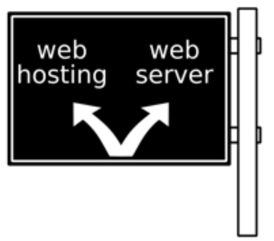

WEB is a Spreaded communication system, not centered
Tim Berners-Lee, Web browser(client computer), Web server(server computer), Free static web hosting and, and
The World Wide Web (abbreviated WWW or the Web) is an information space where documents and other web resources are identified by Uniform Resource Locators (URLs), interlinked by hypertext links, and can be accessed via the Internet.[1] English scientist Tim Berners-Lee invented the World Wide Web in 1989. He wrote the first web browser computer program in 1990 while employed at CERN in Switzerland.[2][3] The Web browser was released outside CERN in 1991, first to other research institutions starting in January 1991 and to the general public on the Internet in August 1991.